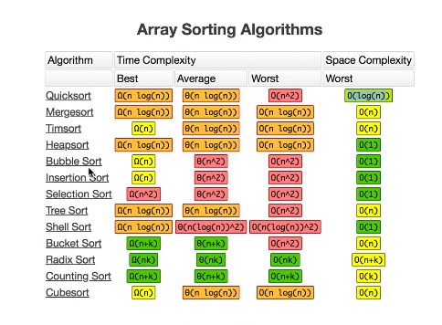

Which is the problem with the .sort() method build in programming languages
to make sure the sort method works the way you expect it to add the function description to it ->function(a, b){a-b/ b-a/ a.localeSort(b)
is the simplest and one of the less efficient ones - time complexity O(n^2)-average and space complexity O(1) - we are not creating any new data structures -
Time complexity - O(n^2) - space complexity O(1)
The time complexity in the best scenario can be O(n)/ worst scenario O(n^2) - space complexity O(1)
Time complexity O(n log n)
One of the most efficient way to sort
Time complexity O(n log n)
Space complexity - O(n) - we add the elements to a new array while sorting them
Is the most popular sorting alg because the Time complexity in the best case is O(log n) - learn to calculate log n ?
WORST CASE SCENARIO - IF THE CHOSEN PIVOT IS THE SMALLEST/ BIGGEST ITEM - TIME COMPLEXITY - O(n^2)
Insertion sort - is the best choice when the input is small and almost sorted
Bubble sort & selection sort - never used - Time complexity O(n^2)
Merge sort - good time complexity - O(n log n) - bad space complexity O(n)
Quicksort - the most popular - best case Time complexity O(n log n)/ worst O(n^2) - space complexity - best case - O(log n)/ worst case O(n) - is not a stable algorithm( it gives the same results in order if 2 item are the same )
Counting sort
Redix sort
Exercise - choose which sorting algorithm to use in order to solve this problems - most developers will never code from scratch a sorting algorithm but for sure will need to use the knowledge to make the best decisions in this type of problems
insertion sort
radix or counting sort
Quick sort
Merge Sort - I am not choosing the quick sort in order to avoid the worst case scenario O(n^2) - I am worried about the performance as the data is big
Insertion Sort
radix or counting Sort - Quick sort if decimal places (as the non comparison algorithms are not good for precision calculations)
Quick sort - if the memory is expensive and I am not worried about the worst case of quick sort
Bubble sort or selection sort